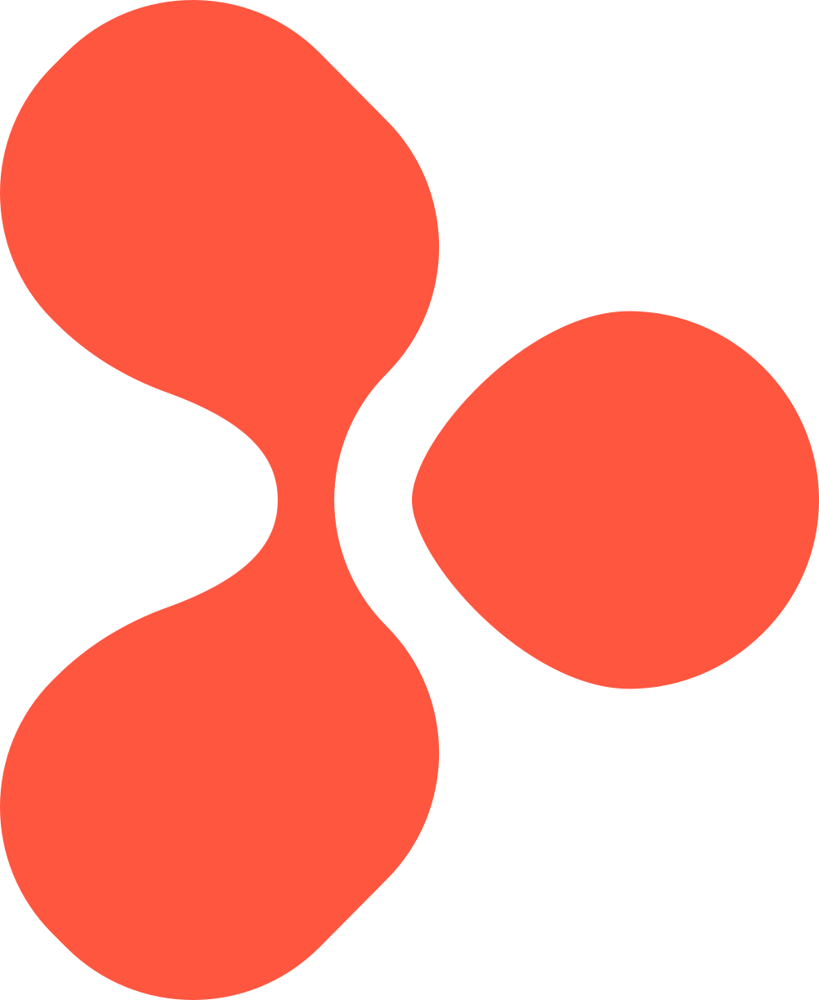
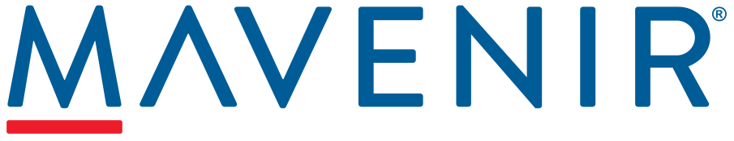

Cloud integration and process refactoring
2021–2025
Client: DFA

Endava · Agile Project ManagerLed Agile delivery of an API Gateway and the refactoring of approximately 60 business processes during a move to Azure.
I love making projects succeed, using both Agile and Waterfall across different markets.
2021–2025
Client: DFA

Endava · Agile Project ManagerLed Agile delivery of an API Gateway and the refactoring of approximately 60 business processes during a move to Azure.
2017–2018
Client: GSK
TCS · e-Invoicing - Order to Cash (O2C) Stream Lead
Led the Order-to-Cash workstream, including e-invoicing integrations, across four countries in GSK’s SAP migration.
2014
Client: Entel Peru

Comverse (now Mavenir) · Senior Project Lead — Presales Support / On-site Implementation LeadLed on-site implementation of value-added services for Entel’s entry into Peru and its new 4G network.
2025–2026
Client: DCTX
Endava · Scrum Master
Led the web, mobile, back-end, data migration, and DevOps teams for a new sports media platform on GCP.
2021
Client: Avianca
TCS · Technical Project Manager / Client Partner
Developed the business case, TCO model, and migration roadmap to move a data warehouse from on-premises Oracle to Azure.
2018–2019
Client: Tigo
TCS · Project / Program Delivery Lead
Led delivery of a Big Data platform to automate approximately 25 SOX control processes, with teams in Colombia and India.
2015
Client: Entel Chile
Comverse (now Mavenir) · Senior Project Lead — Project Recovery / On-site Delivery Lead
Recovered a delayed project by rebuilding a credible delivery plan, then took the solution to production go-live.
2013
Client: Claro Peru
Comverse (now Mavenir) · Senior Project Lead — On-site Implementation / Project Lead
Coordinated the value-added services platform upgrade and its integration with Claro’s new 4G network.
2012
Client: GT&T Guyana
Comverse (now Mavenir) · Senior Project Lead — On-site Implementation
Led on-site implementation of a new value-added services platform, integrated with existing prepaid charging systems.
2011–2012
Client: Digicel Jamaica
Comverse (now Mavenir) · Senior Project Lead — Implementation Lead / Customer Delivery Lead
Led the on-site relocation of the value-added services platform to Jamaica after the Haiti earthquake.
Let’s talk about your next delivery challenge.
Contact me